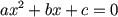
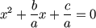
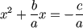
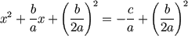
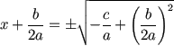
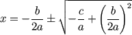
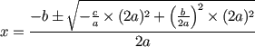
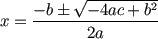

Derivation of Quadratic Formula
A Quadratic Equation looks like this:

And it can be solved using the Quadratic Formula:
![Quadratic Formula: x = [ -b (+-) sqrt(b^2 - 4ac) ] / 2a](images/quadratic-formula.svg)
That formula looks like magic, but you can follow the steps to see how it comes about.
1. Complete the Square
ax2 + bx + c has "x" in it twice, which is hard to solve.
But there is a way to rearrange it so that "x" only appears once. It is called Completing the Square (please read that first!).
Our aim is to get something like x2 + 2dx + d2, which can then be simplified to (x+d)2
So, let's go:
| Start with |  |
| Divide the equation by a |  |
| Put c/a on other side |  |
| Add (b/2a)2 to both sides |  |
|
The left hand side is now in the x2 + 2dx + d2 format, where "d" is "b/2a" So we can re-write it this way: |
|
| "Complete the Square" |  |
Now x only appears once and we are making progress.
2. Now Solve For "x"
Now we just need to rearrange the equation to leave "x" on the left
| Start with | |
| Square root |  |
| Move b/2a to right |  |
| That is actually solved! But let's simplify it a bit: |
|
| Multiply right by 2a/2a |  |
| Simplify: |  |
Which is the Quadratic formula we all know and love: